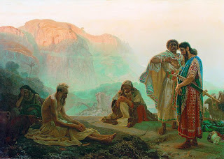

Bava Batra 16 - The Suffering of Job
When Satan was allowed to inflict extreme pain on Job's body without allowing him to die, it was most difficult for him, similar to a servant told by his master, "Break a keg of wine but save the wine within it."
The intentions of Satan were for the sake of Heaven. When Satan saw that the Holy One, Blessed be He, was partial to Job, he said to himself, "God forbid that He will forget the mercy He has for Abraham." Therefore he set out to demonstrate Job's failings.
Rav Acha bar Yakov taught this in the town of Papunia, and the Satan came and kissed his feet in appreciation.